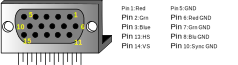
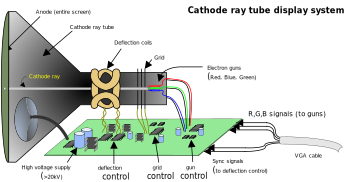
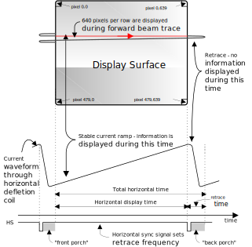
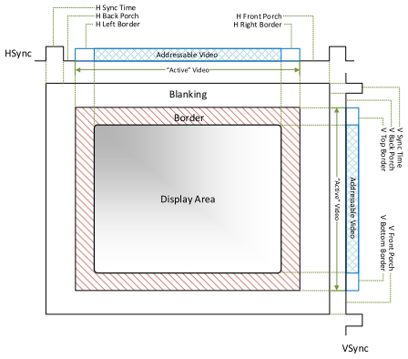
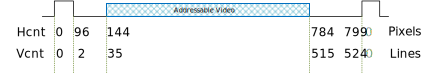

In this design, you are going to be asked to do a VGA controller to display something on your monitor. Actually, a VGA controller is quite a simple design which only requires two counters and several comparators.
Be able to implement adders, counters, multiplexers, and comparators behaviorally in Verilog® HDL.
After you’re done, you should:
Be able to design a complex digital system using basic combinational and sequential digital circuit components;
Understand the timing specification of a VGA interface.
Background
Video Graphics Array (VGA)
VGA stands for Video Graphics Array. Initially, it refers specifically to the display hardware first introduced with IBM® PS/2 computer in 1987. With the widespread adoption, it now usually refers to the analog computer display standards (defined by VESA®), the DE-15 Connector (commonly known as VGA connector), or the 640x480 resolution itself.
Figure 1. VGA Connector
The analog computer display standards is specified, published, copyrighted and sold by the VESA organization. The timing information used in this project is an example of how a VGA monitor might be driven in a 640x480 resolution.
A DE-15 connector, commonly known as a VGA connector, is a three row 15-pin D-subminiature Connector (named after their D-shaped metal shield). The name of each pin is shown in Fig. 1 below. We will only concentrate on the 5 signals out of 15 pins in this project. These signals are Red, Grn, Blue, HS, and VS. Red, Grn, and Blue are three analog signals that specify the color of a point on the screen, while HS and VS provide a positional reference of where the point should be displayed on the screen. By properly driving these five signals according to the VGA timing specification, we can display everything we want on any monitors. To understand how these signals should be driven, we need to take a look at how our monitors actually work.
How Do Our Monitors Work
CRT-based VGA displays use amplitude-modulated moving electron beams (or cathode rays) to display information on a phosphor-coated screen. LCD displays use an array of switches that can impose a voltage across a small amount of liquid crystal, thereby changing light permittivity through the crystal on a pixel-by-pixel basis. Although the following description is limited to CRT displays, LCD displays have evolved to use the same signal timings as CRT displays (so the “signals” discussion below pertains to both CRTs and LCDs). Color CRT displays use three electron beams (one for red, one for blue, and one for green) to energize the phosphor that coats the inner side of the display end of a cathode ray tube (see Fig. 2 below).
Figure 2. Color CRT display.
Electron beams emanate from “electron guns” which are finely-pointed, heated cathodes placed in close proximity to a positively charged annular plate called a “grid.” The electrostatic force imposed by the grid pulls rays of energized electrons from the cathodes, and those rays are fed by the current that flows into the cathodes. These particle rays are initially accelerated towards the grid, but they soon fall under the influence of the much larger electrostatic force that results from the entire phosphor-coated display surface of the CRT being charged to 20kV (or more). The rays are focused to a fine beam as they pass through the center of the grids, and then they accelerate to impact on the phosphor-coated display surface. The phosphor surface glows brightly at the impact point, and it continues to glow for several hundred microseconds after the beam is removed. The larger the current fed into the cathode, the brighter the phosphor will glow.
Between the grid and the display surface, the beam passes through the neck of the CRT where two coils of wire produce orthogonal electromagnetic fields. Because cathode rays are composed of charged particles (electrons), they can be deflected by these magnetic fields. Current waveforms are passed through the coils to produce magnetic fields that interact with the cathode rays and cause them to transverse the display surface in a “raster” pattern, horizontally from left to right and vertically from top to bottom, as shown in Fig. 3. As the cathode ray moves over the surface of the display, the current sent to the electron guns can be increased or decreased to change the brightness of the display at the cathode ray impact point.
Information is only displayed when the beam is moving in the “forward” direction (left to right and top to bottom), and not during the time the beam is reset back to the left or top edge of the display. Much of the potential display time is therefore lost in “blanking” periods when the beam is reset and stabilized to begin a new horizontal or vertical display pass. The size of the beams, the frequency at which the beam can be traced across the display, and the frequency at which the electron beam can be modulated determine the display resolution.
Figure 3. VGA horizontal synchronization.
VGA Timing Specification
Modern VGA displays can accommodate different resolutions, and a VGA controller circuit dictates the resolution by producing timing signals to control the raster patterns. The controller must produce synchronizing pulses at 3.3V (or 5V) to set the frequency at which current flows through the deflection coils, and it must ensure that video data is applied to the electron guns at the correct time. Raster video displays define a number of “rows” that corresponds to the number of horizontal passes the cathode makes over the display area, and a number of “columns” that corresponds to an area on each row that is assigned to one “picture element”, or pixel. Typical displays use from 240 to 1200 rows and from 320 to 1600 columns. The overall size of a display and the number of rows and columns determines the size of each pixel.
Video data typically comes from a video refresh memory; with one or more bytes assigned to each pixel location. The controller must index into video memory as the beams move across the display, and retrieve and apply video data to the display at precisely the time the electron beam is moving across a given pixel.
A VGA controller circuit must generate the HS and VS timings signals and coordinate the delivery of video data based on the pixel clock. The pixel clock defines the time available to display one pixel of information. The VS signal defines the “refresh” frequency of the display, or the frequency at which all information on the display is redrawn. The minimum refresh frequency is a function of the display’s phosphor and electron beam intensity, with practical refresh frequencies falling in the 50Hz to 120Hz range. The number of lines to be displayed at a given refresh frequency defines the horizontal “retrace” frequency.
Example Timing Specification for 640x480 at 60Hz
Figure 4 and the table below provide the timing specification for 640x480 resolution at 60Hz Frame Rate:
Figure 4. VGA timing specification.
Description
Notation
Time
Width/Frequency
Pixel Clock
tclk
39.7 ns(±0.5%)
25.165MHz
Horizontal Sync Time
ths
3.813 µs
96 pixels
Horizontal Back Porch
thbp
1.907 µs
48 pixels
Horizontal Front Porch
thfp
0.636 µs
16 pixels
Horizontal Addr Video Time
thaddr
25.422 µs
640 pixels
Horizontal L/R Border
thbd
0 µs
0 pixels
Veritcal Sync Time
tvs
0.064 ms
2 Lines
Veritcal Back Porch
tvbp
1.048 ms
33 Lines
Veritcal Front Porch
tvfp
0.318 ms
10 Lines
Veritcal Addr Video Time
tvaddr
15.253 ms
480 Lines
Veritcal T/B Border
tvbd
0 ms
0 Lines
Requirements
1. Solid Color Screen With Resolution of 640x480 @ 60Hz
In this design challenge, you are asked to implement a circuit that generates VGA signals to draw a solid color screen on your monitor in a resolution of 640x480.
Hints
You need a clock divider to generate the pixel clock, which provides a timing reference to HS and VS signals. The pixel clock frequency is 25.175MHz in the specification. However, with ±0.5% accuracy, 25MHz can be acceptable as well. And obviously, 25MHz is easy to generate on your FPGA boards with the clock divider you implemented in previous projects.
You need two counters, a counter (horizontal counter) to count pixels in each line and another counter (vertical counter) to count lines in a frame. The horizontal counter needs to reset itself when it reaches the end of the line (799 in this case), and when it resets itself, it needs to provide a Terminal Count signal to the Enable input of vertical counter so that vertical counter can add 1 when a new line begins. Similarly, vertical counter needs to reset itself when it reaches the end of the frame. So, some changes need to be adapted into the counter you implemented in previous projects into this design.
Based on the counter values, we can compare them to the constant defined in the specification to generate HS and VS signals. Note that you have to drive Red, Grn, and Blue to GND outside the display area. Figure 5 shows the HS and VS generation based on the counter values.
Figure 5. HS and VS generation based on counter values.
Refer to block diagram provided in figure 6 to see the whole system in place.
Draw a “Crosshair” pattern on the display. A Crosshair pattern is a 480 pixel high, 1 pixel wide vertical column in the center of the display and a 640 pixels long, 1 pixel high horizontal line across the middle of the display.
3. Draw a 5px by 5px Solid Square
4. Make the 5px by 5px Solid Square Move at a Speed of 60px per Second
Challenge
If you are confident in doing requirements of this porject, go ahead and challenge yourself with this design problem for some extra practice!
1. Rotating the Crosshair Pattern
Make the crosshair pattern rotate that you created in requirement 2.
All done with this module!
Print the submission form and demonstrate your work to the TA.
Next Module: Sequential Logic: State Machines
When you are ready, you can proceed to the next module’s, Sequential Logic: State Machines, PROJECT 7.1: Serial Adders